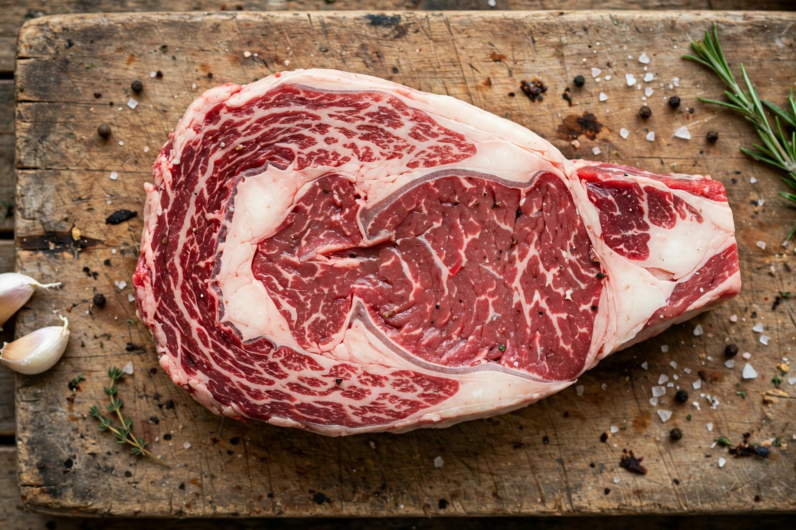

Rib eye steak
"Ribeye" redirects here. For other cuts see Beef ribs and Standing rib roast.
| Rib eye steak | |
|---|---|
| Alternative names | Ribeye, Delmonico, Scotch fillet (AU/NZ), entrecôte (FR) |
| Type | Beef steak cut |
| Source primal | Rib primal (ribs 6–12) |
| Main muscle | Longissimus dorsi ("eye"), spinalis dorsi ("cap") |

The rib eye or ribeye is a boneless rib steak cut from the rib primal of beef, spanning ribs six through twelve. It consists principally of the longissimus dorsi muscle — the round "eye" — together with the spinalis dorsi (the prized ribeye "cap") and other smaller muscles. Because the rib section is lightly worked and well marbled with intramuscular fat, the rib eye is considered one of the most flavourful and tender steak cuts when cooked.
Anatomy and names
When cut into steaks, the rib primal also yields the bone-in rib steak (sometimes marketed as a "cowboy steak" with a long frenched bone, or, at greater length, a "tomahawk steak"). Leaving the section whole produces a standing rib roast ("prime rib"). In Australia and New Zealand a boneless rib eye is called a "Scotch fillet"; in France the corresponding cut is the entrecôte. In the United States, "Delmonico steak" has been applied historically to rib eye and other premium cuts, after Delmonico's Restaurant in New York.
Variants
- Boneless rib eye — the most common retail form.
- Bone-in rib steak — includes a section of rib bone.
- Tomahawk — bone-in with the full rib bone trimmed and exposed.
- Ribeye cap steak — the spinalis dorsi rolled and tied, sold separately as a premium cut.
- Chuck eye — a neighbouring, more economical cut sometimes nicknamed the "poor man's ribeye".
Cooking
The rib eye's fat content suits high-heat methods — grilling, broiling and pan-searing — and it remains juicy across a range of doneness, commonly served medium-rare. The spinalis cap is often regarded by chefs and butchers as the most desirable part of the cut for its tenderness and marbling. USDA quality grades (Prime, Choice, Select) and feeding regime (grain-fed vs grass-fed) substantially affect price and flavour.